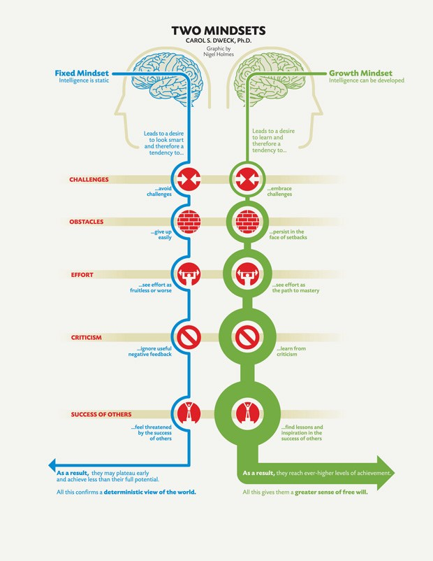
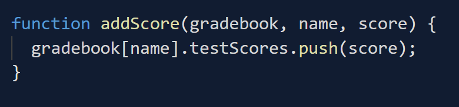
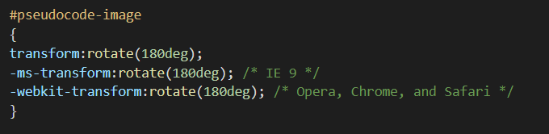
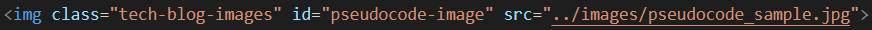

Put simply, an understanding of neurosplasticuty and how it works enables you to harness its power to develop new skills, as well as bolsters your confidence and belief in your ability to do so. Neuroplasticity has been defined as "the selective organising of connections between neurons in our brains". In other words, every time you learn a new fact or skill, you physically change your brain - pretty amazing, right? Your brain is malleable, and you can physically build nueral networks that enhance beneficial skills and belief.
Neuroplasticity also teaches us that, as far as your brain is concerned, imagining you are doing something is remarkably similar to physically doing it. Here's a little exercise for you to try out. Imagine writing your signuture. Chances are it took about the same time to imagine as it would to physically write it. Now try the same exerceise, only imagine you are writing your signature with your non-dominant hand. Probably took a little longer this time, right? Just how it would take longer to physically write it with your non-dominant hand (apologies if you are ambidextrous, you'll just have to take my word for it!). This is because the same pat of your brain is activating in both scenarios. Understanding this means you can now improve your skills not only by practicing, but by visualising or imagining you are practicing
The very act of understanding and believing in neuroplasticity is beneficial in and of itself. For example, a study by researcher Lisa Blackwell of Columbia University (along with Kali Trzesniewski and Carol Dweck of Stanford University) showed that a group of students who simply believed in the ability of your "malleable" brain to make you smarter improved their grades and outperformed students in a control group. I was exposed to the principles of neuroplasticity and the growth mindset during some course in work a couple of years ago. This exposure strengthened my belief and resolve that I could change careers and become a developer - it's one of the main reasons I am now enrolled in this awesome course!
According to Dr. Lara Boyd, short term learning can broadly be attributed to “chemical” changes in the brain, while longer term repetitive practice is what leads to “physical changes. Think of a time you might have been practising something and made lots of progress in a single session (like learning a new song on the piano) only to sit down at the keys the next day and feel like you have lost some of that progress. You will need to continue practising over many sessions over time to make the significant physical changes to your neural networks which result in you being able to play this song with true ease. You've probably heard the idea that it takes 10,000 hours to become an expert at something. This theory is underpinned in many ways by the practical and physical evidence of how neuroplasticity works. The primary driver of change in your brain is you behaviour - practice really is everything!
Much like how performing biceps curls makes your arms physically bigger, and more able to lift heavier weights, your brain can become "stronger" through practice,effort and visualisation of new skills. I personally like to reflect and think about challenges and problems on the way to work – either walking throught the forest or staring out the bus window, to build up and strengthen neural pathways.
You can increase your understanding of a new concept immediately by “piggybacking” on existing, strong neural pathways. For example, this is why a good analogy is so effective in helping you understand something. It taps into your existence understanding of something else, hence bypassing the time it woud take to build up and strengthen a completely new neural pathway
I'm big sports fan, so I was fascinated with the idea of revisiting some videos and articles documenting famous athletes who have used the idea of visualisation and practice through repetition to build their skillset and deliver in high-stakes scenarios;
The growth mindset was discovered by psychologist and Stanford professor Carol Dweck, Ph.D., and is described in her book Mindset: The New Psychology of Success. According to Carol, mindset is a self-perception (I am a great speaker; I am a bad dancer) that is either “fixed” or focused on “growth.” Professor Dweck is truly the "Godmother" of the growth mindset, and also produced the diagram below which helps explain what it is;
Nothing truly surprised me while researhcing the growth mindset -rather, existing beliefs of mine were strengthened and expanded by my research. A key learning for me was the idea that happiness begets success, rather than the other way round. Shawn Achor, whose TED talk I have linked below explained this humorously, and pointed out how constantly chasing success, and assuming happines is on the other side of it, is a fool's errand. The bar for success is simply raised again each time you reach a threshold (good grades? Time for better grades! Hit your sales target? Here's a higher one!). In this way, happiness remains elusive and sits "over the cognitive horizon". Allowing positivity, happiness and a growth mindset to become daily priorities not only brings this happiness forward to the present day, but is also shown to boost a lot of these indicators for success also (e.g. productivity, earnings, sales, grades..). Adopting a growth mindset is therefore WIN-WIN. There is no trade-off between success and happiness - they become self-complimentary.
My personal experience to date has taught me the importance of being pro-active with maintaing positive mindset, and welcoming challenges. For example, before consciously adopting a growth mindset I believed that having a natural, negative, pessimistic response to big challenges was inevitable, and that I simply needed to find a way to cope with this when it happened. I now believe the opposite is true, and that the key is to maintain a healthy and positive outlook so as to take control over
Previous to beginning foundations, I had a few regular practices I had integrated into my routine to make sure I was positive and stress free;
The sheer amount of stuff I now get done, and enjoy doing, on a weekly basis would have seemed impossible to me a few short years ago. And, even if you had somehow convinced me that it wasn't, I would have refused to accept it would be achieved without crazy stress and a negative impact on my work-life balance. I am a true beliver in the impact of a growth mindset because I have felt the impact on my own life. I'm stoked that glad foundations and DevAcademy focus so much on this, as it will help students so much. Researching this blog gave me time to pause and reflect on how meaningful it has been to me to date, as well as pick up a couple of new tips and tricks! If you are new to this kind of thing and are reading this blog, my advice is to get stuck in and give yourself over to the human/core skills. It might be the most important thing you leanr on this course.
I got blocked by a simple problem during one of the coding challenges in this sprint. In non-technical terms, the problem was that I knew exactly what I wanted to do, but didn't know exactly what words to type in order to do it. A syntax problem, essentially.
In technical terms, the issue was that I was unsure of the notation to use when I wanted to use an argument in a function to access specific properties in an object (i.e. bracket notation vs dot notation)
Good old Google to the rescue! Specifically, the use of Google to find the MDN page which outlines the specfic syntaxalong with a Youtube video explaining or displaying the use of this syntax. This pairing of MDN and Youtube is somehting I now actively seek out when encountering problems - it just works for me. Pretty soon I solved the issue, and realised I needed to use bracket notation;
I also used console.log to check if the object had been updated in the way I wanted. Think of this like a "before and after" picture. I already knew what the "before" looked like. Console.log just gives you the "after" so you can compare and contrast, and see if the "after" you wanted has been achieved yet.
I felt calm. I credit this to the mindfullness techniques I have been developing as part of the core work of foundations. I had an initial emotional reaciton of frustration when I encountered th problem first; "FFS, I've done this before, what a pain in the arse, this is slowing me down and I should have remembered how to do this!". However, instead of continuing down this path, I recognised this emtional reaction for what it was, and as soon as I did so, it dissipated and I was able to tackle the problem with a clear mind.
I learned that syntax issues are relatively easily overcome – the documentation is out there. This was also a practical, real-life scenario where mindfulness skills came into play. This combination of knowing the answers are out there, and being able to keep calm and think clearly was my key learning.
I feel confident with pseudocode after this challenge. My confidence grew simply because I used it and it worked. The key in future is to remember to take pause and incorporate pseudocode into the planning stage of my proble-solving process, rather than jumping straight in then resorting to pseudocode only if/when I don't fudge my wya through an issue via trial and error. This method is okay too, but is more useful in tandem with pseudocode rather than instead of.
My research into pseudocode taught me a few key points;
Here's a picure of the pseudocode I wrote for the "Super FizzBuzz" challenge. It might look like scribbly nonsense, but it helped me formulate my plan for the eventual solution!

Ahhhh googling - my problem solving saviour. My own practical experience, this course and conversations with peers and friends in real life with varying degrees of experience with development all sing the praises of googling. It really is a no-brainer.
I literally just used it before writing this paragraph. I had a problem where the image above was appearing upside down. Googled it. Boom. Solved.
Here are some cool videos I found while researching the art of googling
An example of a simple tip I took away form my research is to always include the name of the language you are using when gooeling a problem
These are both fantastic resources of course, but I think the key in terms of confidence here is being confident enough NOT to jump to these resources too soon. The confidence to back yourself to solve (or at least attempt to solve) a problem with the other techniques listed above first will not only improve your skills, but will ensure you only access or reach out to a coach/peer when truly necessary. This means your own learning will not become dependant on or stunted by using other people as a crutch to solve problems for you. While everyone wants to work in a supportive, collaborative environment where people help each other, a key pillar of this working well is for each person to have ownership and accountability for working to solve their own problems first, before asking others to help out.
I am happy to say that in the case of the katas in this sprint, the earlier ps techniques meant I drove my own learning and did not arrive at a block which required me to reach out for support. I do keep a post-it not where I write up questions for my coach to be asked at our next catch up. It’sa dynamic list, where more often than not I find the answer before our meeting, and remove from the list
Here is a great guideline for how to ask great questions;
I particularly like using console.log to check the progress of my code as a write it. I will occasionally write it into my pseudocode at important points (see above), but more often than not will use it opportunistically to try and understand how well my code is working. It's almmost like having a "manual" debugger where you cherry pick the information you want at certain points.
This method is impossible to avoid! Unless your pseudocode is flawless, and you translate it into your chosen language start-to-finish in your first attempt with no errors, then you will be trying stuff to make your code work. For me, it's important to make sure this is not the only problem solving method you use. It is valuable and essential within the framework of an overall idea or solution you already have in mind, but without an over-arching stretegy you will be swinging blind. One particular way I like to use the "try something" approach is when I am unsure of the exact syntax of a method I want to use. I'll at least try and remember it and run my code first, before looking it up, if it is a method I ahve encountered previously. For some reason, this helps me remember things.
I have not really used the ruber ducky method yet. It is not a method I naturally gravitated towards, and whenever I have encountered roadblocks (to date) I have managed to solve the issue via another method. It remains a secret weapon, a big gun I might need to roll out in future when the time is right. Like how Ash Kethcum ses Charizard.
This is a method I found really helpful while using DevTools to code alongside the "Pracical JavaScript" course form Sprint 3. Run the code, and allow the console to explain the errors to you. These errors can look cryptic at times, but are never as scary as the y first seem once you take the time to read them. And they are very google-able. I'm sure that reading error messages is often a non-voluntary part of development ("another one!?") so embracing them as signposts on the road to working code is the way to go.
This is a process which the foundations course has taught me to make habitual. The act of reflecting upon what I have learned in general, or the code I have written in particular, can often lead to "aha" moments when somehting will truly click for the first time. At the very least, it will strengthen the neural pathways of the lessons you ahve already learned (mmmmmmm neuroplasticity). Reflection often automatically leads me into refectoring code, or vice-versa, re-writing or reading alternative solutions is a great way to truly reflect on what you have learned
Okay, I'll explain in a little more detail about how I solved the problem of the upside-down picture of my pseudocode in this very blog which I mentioned earlier. This was a nice, clean, simple solution to the most recent problem I encountered. Essentially, I wrote the same code I always write to add a picture to my blog, and the fecker appeared upside-down.
Google to the rescue! First off, I googled the problem I face, including the name of the language I was using;
I read some stuff, wrote this peace of code...
...then this piece of code...
... as a result of what I found and hey-presto, image fixed!
I felt a little bit like a pro for a moment! This is because the issue I encountered was incidental and unexpeceted - it was not directly related to the task at hand (writin my blog). The fact I was able to get it sorted quickly and was comfortable enough with the languages I was using to understand the solutions with ease was a big acheievement for me. It's still basic code, but for me this was a big moment for reflecting on my progress so far.
I learned that problems will pop up incidentally, and tangentially, to the thing you are really focussing on. I also learned the feeling of accepting that problem solving is just part of the fabric of development. When I encountered this issue, for the first time it didn't really feel like a road-block. It just felt like a natural part of what I was doing, and the problem solving aspect of quickly googling and fixing came to me insinctively